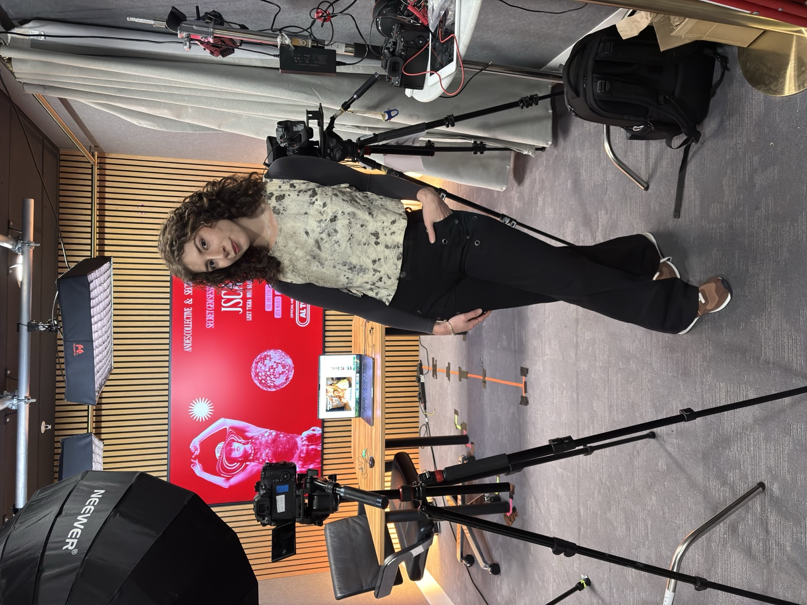

Co-founder of Andes Collective, trained in applied AI & data science, with hands-on experience across royalties, partnerships, and live production. I build the bridge between what the data shows and what artists need.
Three projects, three different proofs of range: building a music community from zero, engineering a recommendation system with real metrics, and keeping live events and rights operations running without a hitch.

I'm Maria Rebellon, a BA Music Production, Performance & Business graduate from the University of Westminster, currently completing an Applied AI & Data Science program with MIT-Great Learning. I combine analytical rigor (SQL, Excel modelling, audience research) with hands-on artist-facing experience: community building, live event production, partnerships, and rights administration.
What drives me is organisational excellence in service of artists: making sure the data is right, the metadata is clean, and the strategy behind every release or event is grounded in real audience insight.
Whether it's growing a community, cleaning up rights data, or building the next discovery engine, I'd love to hear about it.
Role: Co-founder · Nov 2024 to Present
Latin music fans, emerging artists, and creatives lacked a dedicated space to connect and grow, and the advertising and growth decisions being made around them weren't backed by real audience insight.
An engaged, growing community positioned around real audience data rather than assumption, giving artists a clearer read on who their fans are and how to reach more of them. (Swap in follower counts, reach %, or campaign metrics here once available.)
Role: Data & Model Lead · Capstone Project
Music streaming is the #1 global audio channel, yet most users replay the same familiar tracks while billions of songs go undiscovered. The goal: recommend the Top 10 songs each user is most likely to love, using listening behaviour instead of guesswork. The problem is framed as ranking and retrieval, using play count as an implicit signal of preference.
Cleaned a raw dataset of 1,000,000 songs and 2,000,000 interactions down to a reliable core by removing low-activity users, obscure songs, and extreme play-count outliers.
Only 6.6% of possible user/song combinations had ever been played, meaning roughly 93% of the catalog was effectively undiscovered. Every blank cell in the matrix was a song waiting to be found.
Positioned as both a consumer discovery engine (reduced churn, deeper listening sessions) and a B2B "A&R scouting" tool for labels to spot breakout artists before they go mainstream.
Roles: Production Manager (On The Radar Tour) · Partnerships Intern, AEG Presents · Promotions & Distribution Intern, Secret Gem & Movimientos
Across a university concert tour, major festival partnerships, and artist release campaigns, the common thread was the same: audiences and artists only have a good experience when the operations behind it (timelines, sponsorship deliverables, and rights data) are airtight.
A seamless experience for artists and audiences across a multi-stop tour and major festival partnerships, paired with the kind of metadata accuracy that protects artist royalties long after the event ends.